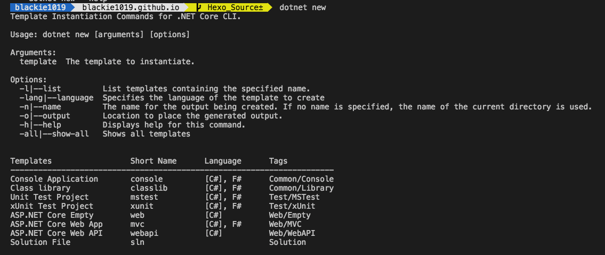
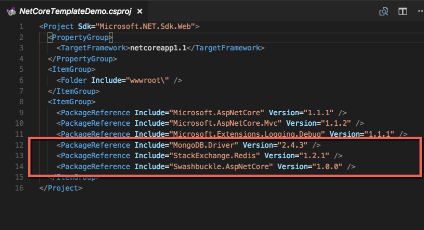
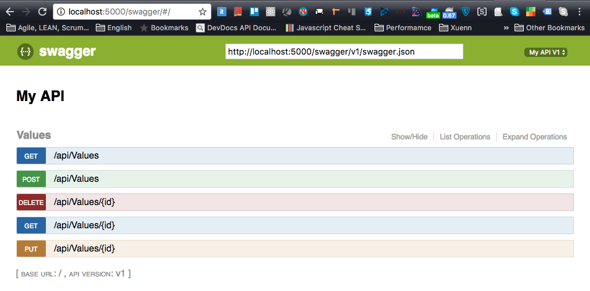
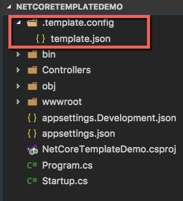
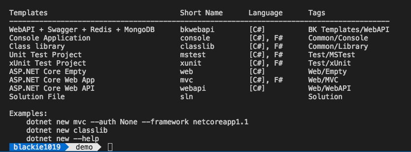
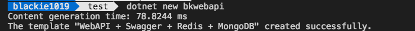

介紹如何新增一個專案樣板(Project Template)並新增至 .NET CLI 中方便我們重複使用

建立一個新專案往往都會有些習慣性會加入的套件或是修改，如果每次都要重複一樣的步驟是很煩人的．如網站開發常常會用到的資料儲存的套件，或是API開發會需要使用到的說明與測試套件等．
而在.NET Core的部份可透過.NET CLI幫忙建立客製化的專案樣板，達到輕鬆重複建立同類型新專案環境的需求．而在.NET Core的部份可透過.NET CLI幫忙建立客製化的專案樣板，達到輕鬆重複建立同類型新專案環境的需求．
這邊我們將示範建立一個Web API專案，並加入 Swashbuckle.AspNetCore , MongoDB.Driver 與 StackExchange.Redis．並將這樣的專案設定為的新樣板，透過新樣板在建立新專案．
Create Customize Project
這邊我們先用Web API的樣板幫我們成立新專案並加入 Swashbuckle.AspNetCore , MongoDB.Driver 與 StackExchange.Redis :
mkdir app || cd app
dotnet new webapi
dotnet add package Swashbuckle.AspNetCore
dotnet add package MongoDB.Driver
dotnet add package StackExchange.Redis
dotnet restore
可以看到我們專案有載入以下packages:

這邊我們先將Swagger的環境設定好:
Startup.cs
1 | using System; |
接著將網站運行起來
dotnet run
我們就可以透過 http://localhost:5000/swagger/#/ 看到以下畫面：

到此專案的框架已經準備好，接著我們透過 .NET CLI 幫我們建立樣板
Build New Customize Project Template
開始前先看一下等等要新增資料夾的結構：

dotnet new -i
這邊最簡單的做法是透過 .template.config 資料夾並在裡面新增 template.json 的方式建立新樣板結構:
template.json
1 | { |
這邊參數可以參考官方wiki．
接著透過.NET CLI執行以下指令完成安裝，要注意路徑是你的專案路徑:
dotnet new --install /Users/blackie/Desktop/DEV/blackie1019/NetCoreTemplateDemo
完成後即可以查看一下目前的專案樣板是否有新增成功：

新增成功後我們即可透過我們的樣板定義的 shortName 來建立新專案

Remove Customize Project
很遺憾與不方便的是目前 .NET CLI 沒有單獨移除的方法，目前能達到的移除效果的指令只有還原，請參考下面：
dotnet new --debug:reinit
再次提醒！這會將我們的設定都還原(原先安裝的其他templates也會因為恢復而被移除)，所以使用上要特別注意一下．